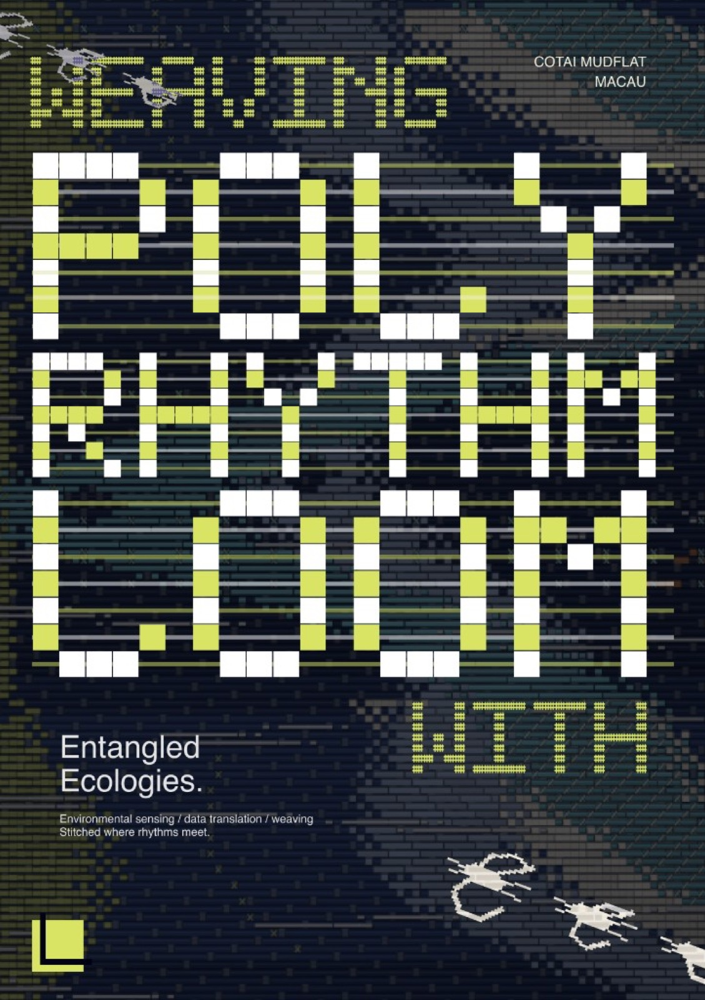
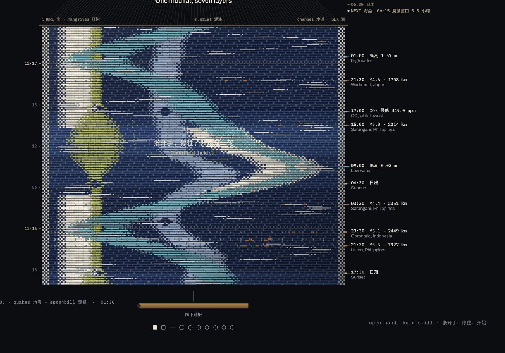
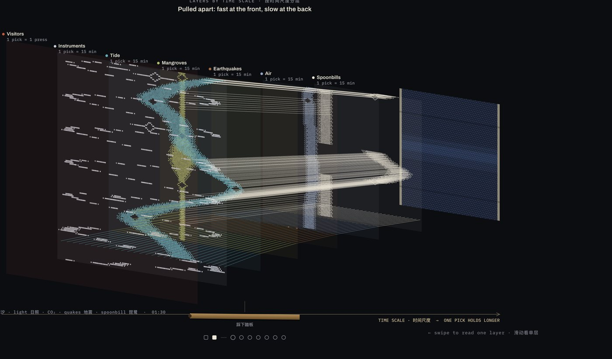
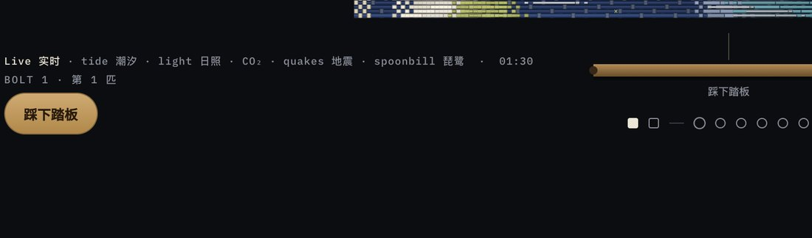

COTAI MUDFLAT · MACAU
怎么织
How to weave
四步，一轮。结束后扫码带走。Four moves. One round. Then take it with you.
-
01

张开手，停住
Open your hand, and hold still.
布上出现这句话时，停大约一秒。这一轮才开始。
When these words are on the cloth, hold for about a second. The round starts.
-
02

点到光点
Meet a light with the open hand.
每个光点是一位行动者，点中就响一声。黑脸琵鹭会飞过。途中可以踩踏板。
Each light is one actant and sounds once. The spoonbill flies past. The treadle counts during the round.
-
03

抓住，左右移
Close your hand and move sideways.
手抓住，左右移动，七层拉开。松开，就停在这一层。
A closed hand pulls the seven layers apart. Release it to stay on one layer.
-
04

踩下踏板
Step on the treadle.
这一下织进布里。一轮结束，扫码保存布和视频。再踩一下，回到织机。
That press is woven in. At the end, scan to keep the cloth and the video. Step again to return.